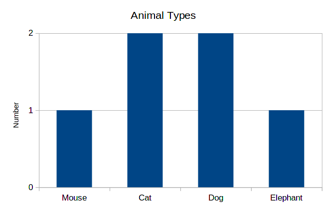
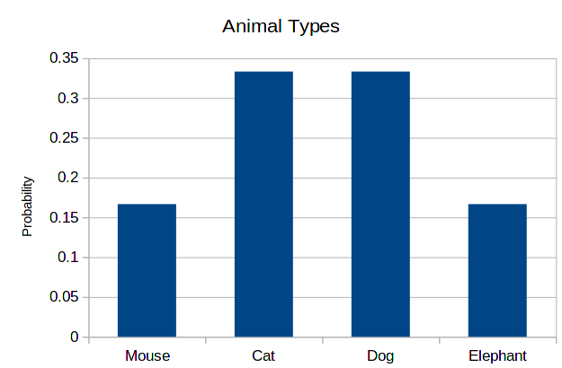
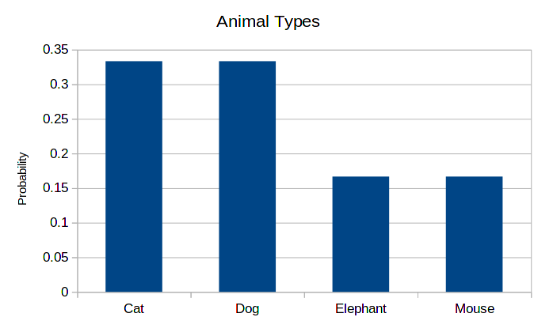
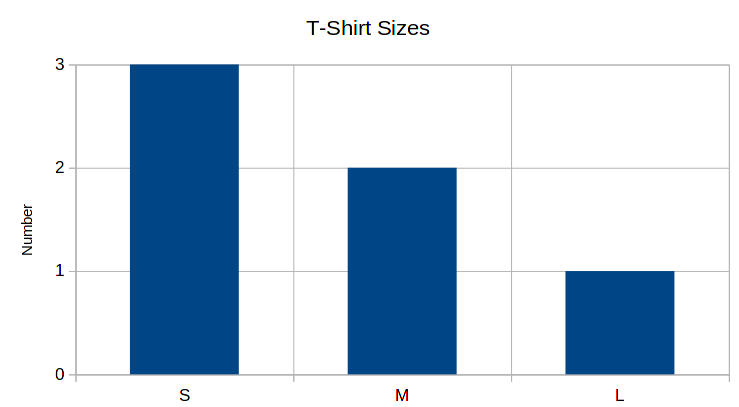
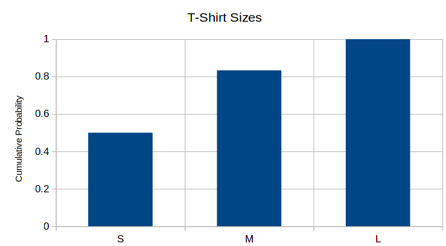
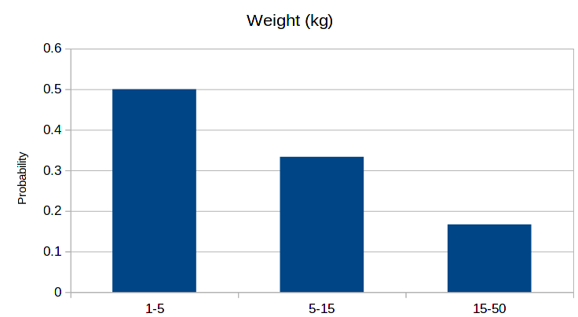
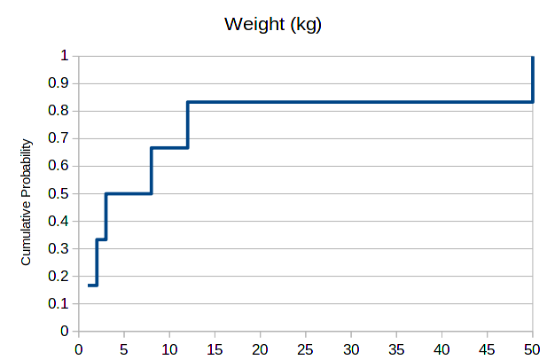

1 Introduction: types of data
The goal of this course is to help students analyze data useful for the health sciences. The point of this section is to show that there are different types of data. And since there are different types of data, each type must be treated accordingly to its own characteristics, otherwise one can obtain results that don’t make sense.
1 An example of wrong data analysis
As an example of wrong treatment of data types, suppose we have a population of patients with diabetes. These patients can have diabetes type 1 or diabetes type 2.
| Type of diabetes | Number of patients |
|---|---|
| 1 | 20 |
| 2 | 10 |
Here, the 1 and 2 labels attributed to the diabetes are not to be interpreted as numbers, but as names. However, someone who doesn’t pay attention to this, may want to calculate the average type of diabetes in the population and obtain:
\frac{1 \times 30 + 2 \times 20}{30 + 20} = 1.4
which doesn’t mean anything. Once more, the 1 and 2 are just labels, not actual numerical data, so diabetes type 1.4 is not something that can be reasoned about.
But what can we do with this kind of data? To understand this, let’s see the kinds of data we are going to study here.
2 Three types of data
We are going to study three kinds of data here.
The first one is categorical data. This kind of data is composed of categories or labels. The main feature of categories is that while they have meaning by themselves, there is no further operational or mathematical relation we can make between categories, besides telling whether they are equal or whether they are different. Examples are the diabetes 1 and 2 above, the country where some person is born, the family name of a person.
The second one is ordered data. This kind of data is also composed of categories or labels, but these categories can be compared. That is, one can tell that one category is larger than another. Examples are letter grades, such as A, B, C, D, F, clothes sizes such as S, M, L, and many other size categorizations that use terms as small and large.
The third one is numerical data. This kind of data is composed by numbers. So, not only we can tell whether two numbers are different from each other, and we can tell which one is smaller or bigger, but we can also know by how much they differ. Examples are physical measurements such as heights, volumes and weights, and chemical element amounts and concentrations. In all these cases we can know what is difference between two data points, which is not the case as for letter grades, for example, as one does not know how much exactly the performance of two students differed just using these grades.
To show some differences between these three types of data, and what we can do with them, we will draw histograms.
3 Histograms
Histograms represent data distributions. That is, given a feature that is represented in multiple members of a population, or point in a data set, we draw a graph. Let’s take as an example the following data:
| Name | Animal | T-Shirt Size | Weight (kg) |
|---|---|---|---|
| Alice | Cat | S | 2 |
| Bob | Dog | S | 3 |
| Cynthia | Mouse | S | 1 |
| Dude | Dog | M | 12 |
| Edward | Cat | M | 8 |
| Fanny | Elephant | L | 4000 |
Some important points to note about this table:
- The first column, Name, is just an identifier, so in general we don’t manipulate this data. It is used just to differentiate data points.
- The second column, Animal, says the kind of animal for each data point. Since this is a categorization that has no inherent ordering, this column contains categorical data.
- The third column, T-Shirt Size, also contains categories. However, there is an inherent ordering in these categories, with “S” being the smaller and “L” the largest. Therefore, this column contains ordered data.
- Finally, the fourth column, Weight, contains numbers, and therefore, numerical data. One indication that data is numeric is when it contains an unit of measurement, such as kilograms in this case.
Now we can go through each one of these:
4 Categorical data
The histogram for this data will contain the categories in the horizontal axis, and in the vertical axis, bars whose height correspond to the number of data points belonging to each category.

This same data can be represented differently. Instead of writing the total numbers for each of the categories, we write the proportions for each one of these. Or equivalently, the probability of a data point being in each category. So, for example, we have 2 cats among 6 animals, so the probability is 2/6 = 0.33. The corresponding histogram is the following:

As you can see, the shape is exactly the same. This is always the case, only the scale of the vertical axis changes.
Finally, since there is no inherent order on the types of animals, the order of the horizontal axis is not important. Therefore, the following histogram is as correct as the previous one.

4.1 Ordered data
As mentioned before, the column T-Shirt Sizes contains ordered data. The procedure for producing the histogram is exactly the same, with one major difference: the order of the categories in the horizontal axis is important, as it should be increasing from left to the right.

Another type of histogram that can be done with ordered data: cumulative number (or probabilities) histograms. In the bars, instead of counting just the number of data points corresponding to the category, we count the number of data point corresponding to the category or any smaller category. For example, the column for “M” will contain the total numbers (or probabilities) for “S” plus “M”. The histogram for cumulative probabilities for the data above is:

In these kinds of graphs, the final column will always have a height of 1, if the histogram is counting probabilities, or the total number of data points, if the histogram is counting numbers.
4.2 Numerical data
Differently from categorical and ordered data, numerical data is continuous. That is, it’s value can be any number, and as such, it is not convenient to create bars per value. Instead, what is typical is to choose bins of data, that is, an interval between two values, and represent in the bar all values present in this interval. So, for example, for the weight data above we can do the following probability histogram:

Choosing good bins is a matter or trial and error, and is not always evident which values to choose. However, this choice can be completely circunvented if we thing about cumulative probabilities instead. In place of bars, we draw a line and obtain the following:

At each point where we have data, the cumulative probability increases. One can read it as follows: the probability of an animal in this data set having less than 10kg, or exactly 10kg equals 66%. For 50kg, we have 100%, as this is the maximum value.
5 Exercise
In the classroom, together, we will create a table containing the following data collected from students:
- Region of birth
- Year of birth
- Height
And draw the above types of histogram for this collected data.
6 Control
Download the following file, which contains data for several people containing three columns of data. Using this data, draw the following using Excel:
- The total number histogram for sports.
- The probability histogram for ages.
- The cumulative probability histogram for ages.
- The cumulative probability line for shoe sizes.